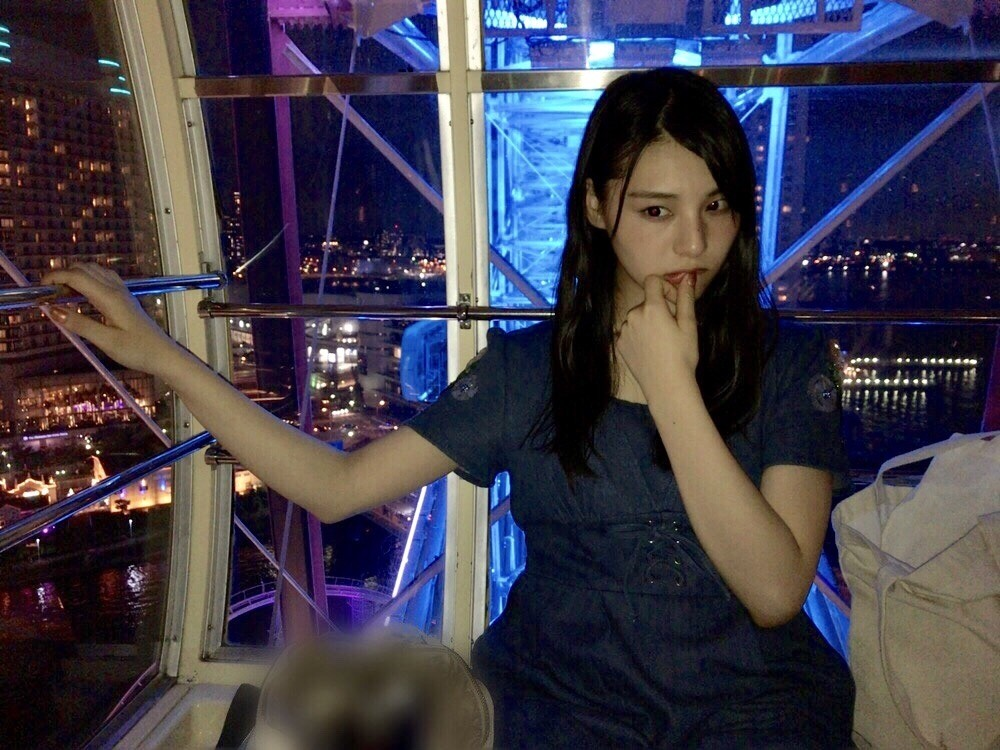

| 2017/09 15 Fri | 最近いい事あった？_(．．*)vol.204 |
みなさんこんばんは
相楽伊織です
最近ひなぴょんが撮ってくれた写真
どこ見てるか分からない、
ブログを休んでしまってすみませんでした。
全ツが一段落してから
イベントが色々ありましたね！
来てくださった方
ありがとうございました(^^)
ボーリング大会が特に楽しかったな
スペアとストライクを出したの！
それで2ゲーム目は2位！！
嬉しかったなぁ
久しぶりに
何かを勝ち取った気持ち(^^)笑
ファンの皆さんとボーリングって
不思議な空間
でも盛り上げてくれるし
ガターでも笑ってくれるし幸せ～

これは結構前にみり愛が撮ってくれた写真
早く冬になればいいのに
ナツキライ
ダイダイダイキライ
この前の全握はひなちまと！
写真撮り忘れたけど
この前一緒にお出かけしたばっかだったから
気楽で楽しかったよ～
ひなちまのファンのみなさん
ありがとうございました！
今週末もイベントと
祝日は久々の個握だし楽しみましょうね♪
最近自撮りしてなくて
写真全然ないや、、
 のぎ天2 今週土曜日 19時～生配信
のぎ天2 今週土曜日 19時～生配信
琴子のホームパーティーに
お呼ばれしましたので参加しまーす♪
みてね(^^)
NYLON JAPAN
本誌の企画で
Heather diaryさんとコラボしまして、
HeatherさんのTwitterから
ネットの記事も見られます。
普段使ってるバッグや
メイク道具も載ってますので見てみてください♪
キラキラ
ばいばーい
i o r i .

コメント(383)
2017/09/15 20:30